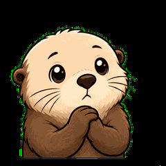
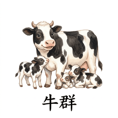
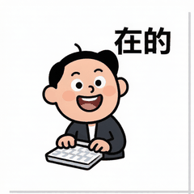

第 01 页 / 共 06 页
不装技能包 · 不写代码 · 纯对话
三步做出
会传播的表情包。
先定角色，再写剧情，最后直接出 GIF。全程只用对话和 AI 内置的图片生成能力，做出来的动图发到微信就能用。下面这四套，就是这套流程跑出来的真实成品：
续命中 → 满血！→ 开会？→ 没电了

点头 · 恍然大悟 · 摸鱼式认同

牛群 · 马群 · 工作群 · 收到！

震惊 → 无语 → 灵魂出窍
动图表情的传播密码：角色认得出 + 剧情一眼懂 + 循环接得上。三步正是按这个顺序设计的——先有灵魂，再有故事，最后才有作品。
第一步生成核心角色
一句话锁死主角形象
→一句话锁死主角形象
第二步定四格剧情
铺垫 · 触发 · 包袱 · 循环
→铺垫 · 触发 · 包袱 · 循环
第三步直接出 GIF
逐张生成四格，自动拼成动图
逐张生成四格，自动拼成动图
第 02 页 / 共 06 页
就三步：
定角色 → 写剧情 → 出 GIF
不装技能包、不写代码、不用注册任何工具，全程纯对话，跟着三步走：
第一步生成核心角色
一句话锁死主角形象（物种 / 画风 / 配色），后面每一步都原样复制这段描述，形象才不会跑偏。
一句话锁死主角形象（物种 / 画风 / 配色），后面每一步都原样复制这段描述，形象才不会跑偏。
第二步定四格剧情
铺垫 → 触发 → 包袱 → 循环。最后一格要能接回第一格，动图循环才顺。
铺垫 → 触发 → 包袱 → 循环。最后一格要能接回第一格，动图循环才顺。
第三步直接出 GIF
把第二步的四格图发给 AI，让它调用代码合成循环 GIF，发微信就能用。
把第二步的四格图发给 AI，让它调用代码合成循环 GIF，发微信就能用。
第 03 页 / 共 06 页
第一步：
先生成核心角色。
表情包的灵魂是角色。先把主角定下来，后面所有表情都从这一个角色派生，形象才不会跑偏。重点是：这段角色描述要能一句话复制——之后的每一步都原样贴上它。
请生成一张微信表情包的原创主角设定图： 【角色】绘本插画风的牛马打工人吉祥物，圆润可爱的身形，头身比约 1:1：头顶两侧一对浅棕色小牛角，牛角前方一对尖尖立起的白色马耳朵，后脑垂下一大缕蓬松飘逸的棕色马鬃毛，微微拉长的圆脸带圆润鼻吻，黑豆大眼，脸颊两团红晕，眼神疲惫又带一丝阴阳怪气的嘲讽，身穿墨绿色工装马甲配背带裤，小圆蹄手 【画风】精致绘本厚涂风：细腻水粉笔触、柔和光影、暖色系、画质精致不粗糙 【构图】全身像，正面站立，居中，四周留白 【背景】背景必须是纯白 #FFFFFF：不能是米色、米黄、乳白，不能有纸张纹理或暖色调，画面四角都要是纯白；不要任何家具、地板、阴影 【要求】关闭水印：画面不要出现任何水印、角标、Logo 或平台标识；角色穿鲜艳的彩色衣服（不能是白色或浅色），画面里不要出现任何文字
第 04 页 / 共 06 页
第二步：
再定四格剧情。
角色定了，给它写一个四格小故事：一格一个动作、一格一句话。动图是循环播放的，所以故事要能「接回第一格」。
1 铺垫角色正处在什么日常情境
例：瘫在工位上刷手机
例：瘫在工位上刷手机
2 触发发生什么，让人有反应
例：看到需求文档，白眼翻上天
例：看到需求文档，白眼翻上天
3 包袱动作反转，形成笑点
例：会议邀请弹窗，歪嘴冷笑
例：会议邀请弹窗，歪嘴冷笑
4 循环最后一格接回第一格
例：看完工资条，瘫回第一格的样子
例：看完工资条，瘫回第一格的样子
把第一步的角色描述原样复制进来，再贴上四格剧情：
继续用上一步的主角（绘本插画风牛马打工人：小牛角 + 白马耳 + 棕色马鬃、黑豆大眼、墨绿色工装马甲），设计四格动图剧情： 【画风】精致绘本厚涂风：细腻笔触、柔和光影、暖色系 【背景】四张图每一张都必须是纯白底 #FFFFFF：不能米黄、乳白、纸纹、暖色调，四角必须纯白；无家具、地板、阴影 【剧情】 第1格（铺垫）：一头奶牛被一群小牛崽围着，温馨幸福，字幕「牛群」 第2格（触发）：一匹骏马被一群小马崽围着，撒欢快乐，字幕「马群」 第3格（包袱）：镜头切到主角——牛马打工人独自举着手机，被一圈工作群消息气泡包围，身边没有朋友，生无可恋，字幕「工作群」 第4格（循环）：牛马打工人低头盯着手机屏幕，可怜兮兮地伸手回复，只能在工作群里喊「收到」，字幕「收到！」 【要求】关闭水印：画面不要出现任何水印、角标、Logo 或平台标识；每一张图背景都要纯白、四角纯白；字幕每格 ≤6 字；去掉字幕动作也能看懂。注意：第1、2格是真牛真马（各有自己的群），第3、4格才是牛马打工人（只有工作群，只能喊「收到」）——这个对比才是梗
第 05 页 / 共 06 页
第三步：
让 AI 合成 GIF。
第二步已经生成了带字幕的四格图。第三步只差一步：把下面这段提示词发给 AI，它会调用代码工具把四张图合成循环 GIF。
把上一步生成的四张表情图按顺序合成一张循环播放的 GIF，并用代码实现，不要只给描述。 要求： 1. 按 1→2→3→4 的顺序合成 2. 统一缩放到微信表情标准尺寸 240×240 3. 循环播放：每帧显示 0.5 秒，最后一格停 1.5 秒再回到第一格，形成「结束感」 4. 文件大小 ≤ 500 KB
AI 会调用代码完成：检查白底 → 按顺序拼帧 → 导出 GIF。你只管复制、检查、发微信。
自动完成AI 用代码帮你干的三件事
① 检查每张四角纯白 → ② 按顺序合成 GIF（240×240）→ ③ 报出文件大小给你验收。
① 检查每张四角纯白 → ② 按顺序合成 GIF（240×240）→ ③ 报出文件大小给你验收。
关键参数微信表情的硬指标
最大边长 240×240 · 文件 ≤ 500 KB · 循环播放 · 最后一格停 1.5 秒形成「结束感」。
最大边长 240×240 · 文件 ≤ 500 KB · 循环播放 · 最后一格停 1.5 秒形成「结束感」。
检查 1
四格字幕的笔画都正确吗？有缺笔画、错字就回到第二步重生成那一格。
四格字幕的笔画都正确吗？有缺笔画、错字就回到第二步重生成那一格。
检查 2
GIF 循环顺不顺？第 4 格接第 1 格，能看出「又开始了」？
GIF 循环顺不顺？第 4 格接第 1 格，能看出「又开始了」？
检查 3
发到微信 → 长按 GIF → 选择「添加到表情」→ 斗图试试！
发到微信 → 长按 GIF → 选择「添加到表情」→ 斗图试试！
第 06 页 / 共 06 页
课后练习：
换个角色，再来一遍
把第一步的角色换掉、第二步的剧情换掉，其余完全不动，重新走完三步，你就真正学会做表情包了。下面几个方向都可以试：
换角色猫、狗、熊猫、打工兔
圆滚滚的、胖乎乎的、脸越垮越好，动物打工人最容易出圈。
圆滚滚的、胖乎乎的、脸越垮越好，动物打工人最容易出圈。
换剧情吐槽加班 / 开会 / 周一
「明天就周五」「已读不回」「需求又改了」……都是现成的梗。
「明天就周五」「已读不回」「需求又改了」……都是现成的梗。
换文字字幕只改 2～6 个字
同一个角色、同一套动作，换个字幕就是另一张表情。批量出图的诀窍就在这里。
同一个角色、同一套动作，换个字幕就是另一张表情。批量出图的诀窍就在这里。
做完后，欢迎把成品发到微信群里斗一圈，看看谁的图被转得最多 👏